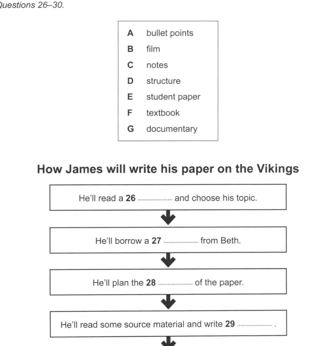
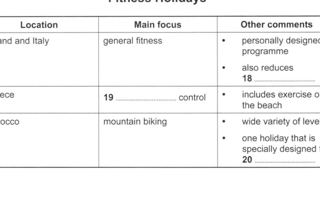
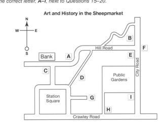
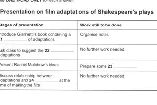

Listening visuals Cambridge 12Reviewed results: 122 confirmed issue records (86 duplicate pairs, 9 sequence inversions, 1 wrong-Part image, 26 clipped images); 23 suspected records. Counts overlap Parts/assets. Full reviewed CSV. Raw audit.json/findings.csv are detector output, not the final defect list. Fallback scope alone is not a defect. OCR ranges are incomplete hints.
All books · Cambridge 12: 16 Parts · exact current resolver outputCambridge 12 / Test 5 / Part 1
No confirmed/candidate defect detected; not a visual PASS
Q[1, 10]: 1, 2
 #1 OCR Q[[1, 10]] · 1352×1799
#1 OCR Q[[1, 10]] · 1352×1799
Test_5_Section_1_PDF_010.png
assets/public/084591432118ccdb21cdf9ae88df44065680463e5093670c23c44a1c8011b8f1.png
asset-084591432118ccdb21cdf9ae88df44065680463e5093670c23c44a1c8011b8f1 #2 OCR Q[] · 1352×1812
#2 OCR Q[] · 1352×1812
Test_5_Section_1_PDF_011.png
assets/public/e3cc50e2d194686e8c98828eb71fe330f9526fb0f0d8e3b4de2ea7ba13cbfc37.png
asset-e3cc50e2d194686e8c98828eb71fe330f9526fb0f0d8e3b4de2ea7ba13cbfc37Cambridge 12 / Test 5 / Part 2
No confirmed/candidate defect detected; not a visual PASS
Q[11, 14]: 1, 2
Q[15, 16]: 1, 2
Q[17, 20]: 1, 2
 #1 OCR Q[[11, 20], [11, 14]] · 1352×1812
#1 OCR Q[[11, 20], [11, 14]] · 1352×1812
Test_5_Section_2_PDF_012.png
assets/public/0acb08433909d93b2a16235364751e4bc845b0e660007bb8b8074b86dae0c01b.png
asset-0acb08433909d93b2a16235364751e4bc845b0e660007bb8b8074b86dae0c01b #2 OCR Q[[17, 20]] · 1352×1799
#2 OCR Q[[17, 20]] · 1352×1799
Test_5_Section_2_PDF_013.png
assets/public/eef061a71e06de556e11776c7020bd3899670ebeeef1dacfe96eb98e37676751.png
asset-eef061a71e06de556e11776c7020bd3899670ebeeef1dacfe96eb98e37676751Cambridge 12 / Test 5 / Part 3
No confirmed/candidate defect detected; not a visual PASS
Q[21, 23]: 1
Q[24, 30]: 1
 #1 OCR Q[[21, 30], [21, 23], [24, 30]] · 1352×1799
#1 OCR Q[[21, 30], [21, 23], [24, 30]] · 1352×1799
Test_5_Section_3_PDF_014.png
assets/public/9e28f6674a3f609b90a1cd1a6468afba5eea65b7285edbf4988412368f732eaa.png
asset-9e28f6674a3f609b90a1cd1a6468afba5eea65b7285edbf4988412368f732eaaCambridge 12 / Test 5 / Part 4
No confirmed/candidate defect detected; not a visual PASS
Q[31, 40]: 1
 #1 OCR Q[[31, 40]] · 1352×1804
#1 OCR Q[[31, 40]] · 1352×1804
Test_5_Section_4_PDF_015.png
assets/public/af36feafb2d6c6bd18dc5b96b370109b78fdaeb0ab6d889d857d8eadde3af5a5.png
asset-af36feafb2d6c6bd18dc5b96b370109b78fdaeb0ab6d889d857d8eadde3af5a5Cambridge 12 / Test 6 / Part 1
No confirmed/candidate defect detected; not a visual PASS
Q[1, 10]: 1 [Part fallback]
 #1 OCR Q[[1, 10]] · 1359×1804
#1 OCR Q[[1, 10]] · 1359×1804
Test_6_Section_1_PDF_030.png
assets/public/497c88ae723961b88f1d8389b256326c6b047a58f8237b5fa497d8fb622d9352.png
asset-497c88ae723961b88f1d8389b256326c6b047a58f8237b5fa497d8fb622d9352Cambridge 12 / Test 6 / Part 2
No confirmed/candidate defect detected; not a visual PASS
Q[11, 15]: 1, 2 [Part fallback]
Q[16, 20]: 1, 2 [Part fallback]
 #1 OCR Q[[11, 20], [11, 15]] · 1362×1804
#1 OCR Q[[11, 20], [11, 15]] · 1362×1804
Test_6_Section_2_PDF_031.png
assets/public/6487a907147771e32dd9d8754b32a378c31f37d8565f2032debc72dbe0f8b184.png
asset-6487a907147771e32dd9d8754b32a378c31f37d8565f2032debc72dbe0f8b184 #2 OCR Q[[16, 20]] · 1362×1804
#2 OCR Q[[16, 20]] · 1362×1804
Test_6_Section_2_PDF_032.png
assets/public/a5461751e8a900d97ea6c854277e263138b31d97a3ecc060ff1cc6970dce4c20.png
asset-a5461751e8a900d97ea6c854277e263138b31d97a3ecc060ff1cc6970dce4c20Cambridge 12 / Test 6 / Part 3
V0252:confirmed:duplicate_content; C032:suspected:crop_edge_risk
Q[21, 25]: 1, 2, 3 [Part fallback]
Q[26, 30]: 1, 2, 3
 #1 OCR Q[[21, 30], [21, 25]] · 1362×1799
#1 OCR Q[[21, 30], [21, 25]] · 1362×1799
Test_6_Section_3_PDF_033.png
assets/public/f4f2caffd4444d0f85aea074fdbfbf703bd1a75c3ca6912e311e524f5ad7f03c.png
asset-f4f2caffd4444d0f85aea074fdbfbf703bd1a75c3ca6912e311e524f5ad7f03c #2 OCR Q[[26, 30], [26, 30]] · 1362×1799
#2 OCR Q[[26, 30], [26, 30]] · 1362×1799
Test_6_Section_3_PDF_034.png
assets/public/ab4043b2394de70fab8378271cb9a1450e825e10719c76f012ff646a38f86fe6.png
asset-ab4043b2394de70fab8378271cb9a1450e825e10719c76f012ff646a38f86fe6
#3 OCR Q[] · 1035×1120
Test_6_Section_3_Vikings_Flowchart.png
assets/public/b2ae5f0a6c698c4d9fdfb9909fe2f54a6cc76fbab56d9515dd332f0fd8b554a9.png
asset-b2ae5f0a6c698c4d9fdfb9909fe2f54a6cc76fbab56d9515dd332f0fd8b554a9Cambridge 12 / Test 6 / Part 4
No confirmed/candidate defect detected; not a visual PASS
Q[31, 40]: 1 [Part fallback]
 #1 OCR Q[[31, 40]] · 1362×1804
#1 OCR Q[[31, 40]] · 1362×1804
Test_6_Section_4_PDF_035.png
assets/public/c644ac140ce1dc56b1d1109efa44df1e3e20744321c788c63a7655cdb981c5ae.png
asset-c644ac140ce1dc56b1d1109efa44df1e3e20744321c788c63a7655cdb981c5aeCambridge 12 / Test 7 / Part 1
No confirmed/candidate defect detected; not a visual PASS
Q[1, 10]: 1 [Part fallback]
 #1 OCR Q[[1, 10]] · 1359×1799
#1 OCR Q[[1, 10]] · 1359×1799
Test_7_Section_1_PDF_053.png
assets/public/eaea6d6717597c181ff69964ed7f03e447bad1243d38a0ead04a3404c9e6adcd.png
asset-eaea6d6717597c181ff69964ed7f03e447bad1243d38a0ead04a3404c9e6adcdCambridge 12 / Test 7 / Part 2
V0256:confirmed:duplicate_content; C030:confirmed:clipped_source
Q[11, 12]: 1, 2, 3 [Part fallback]
Q[13, 14]: 1, 2, 3 [Part fallback]
Q[15, 17]: 1, 2, 3 [Part fallback]
Q[18, 20]: 1, 2, 3

#1 OCR Q[] · 1005×650
Test_7_Section_2_Fitness_Holidays_Table.png
assets/public/0972e19261f1f6da196095e18843aaa95e1f0e247549992ced23fa46a3b9cffd.png
asset-0972e19261f1f6da196095e18843aaa95e1f0e247549992ced23fa46a3b9cffd #2 OCR Q[[11, 20], [15, 17]] · 1359×1799
#2 OCR Q[[11, 20], [15, 17]] · 1359×1799
Test_7_Section_2_PDF_054.png
assets/public/62483bef6aa79934335302a1c5766c6be0297429f89c773a08ac366dd94d5dfd.png
asset-62483bef6aa79934335302a1c5766c6be0297429f89c773a08ac366dd94d5dfd #3 OCR Q[[18, 20]] · 1355×1812
#3 OCR Q[[18, 20]] · 1355×1812
Test_7_Section_2_PDF_055.png
assets/public/361d57e11c8770ddb8ab6468f78048dd47cb01886240a6cf6ce6040562ce948f.png
asset-361d57e11c8770ddb8ab6468f78048dd47cb01886240a6cf6ce6040562ce948fCambridge 12 / Test 7 / Part 3
V0260:confirmed:duplicate_content; V0261:confirmed:order_inversion; C040:confirmed:clipped_source
Q[21, 26]: 1, 2, 3
Q[27, 30]: 1, 2, 3 [Part fallback]
 #1 OCR Q[[21, 30], [21, 26], [21, 26]] · 1355×1812
#1 OCR Q[[21, 30], [21, 26], [21, 26]] · 1355×1812
Test_7_Section_3_PDF_056.png
assets/public/976788245acd899feb953dd7b78c462a19428da73158c73e598488c1381830a0.png
asset-976788245acd899feb953dd7b78c462a19428da73158c73e598488c1381830a0 #2 OCR Q[[27, 30]] · 1362×1812
#2 OCR Q[[27, 30]] · 1362×1812
Test_7_Section_3_PDF_057.png
assets/public/e8cd34017ba2dee686fdeb91317f76b702ce45ac824fe2793ed80c4c03791fce.png
asset-e8cd34017ba2dee686fdeb91317f76b702ce45ac824fe2793ed80c4c03791fce#3 OCR Q[[21, 26]] · 1075×1210
Test_7_Section_3_Tourism_Case_Study_Flowchart.png
assets/public/fd8c05167adba51b9b5ecdd9b5824fd2b674818c3f0d2f332bc7b3c6d87da10b.png
asset-fd8c05167adba51b9b5ecdd9b5824fd2b674818c3f0d2f332bc7b3c6d87da10bCambridge 12 / Test 7 / Part 4
No confirmed/candidate defect detected; not a visual PASS
Q[31, 40]: 1 [Part fallback]
 #1 OCR Q[[31, 40]] · 1362×1812
#1 OCR Q[[31, 40]] · 1362×1812
Test_7_Section_4_PDF_058.png
assets/public/42b20c67d58531d0dee06fb4f58ba8f5dd1454c368c91d47ba8da522a28bd287.png
asset-42b20c67d58531d0dee06fb4f58ba8f5dd1454c368c91d47ba8da522a28bd287Cambridge 12 / Test 8 / Part 1
No confirmed/candidate defect detected; not a visual PASS
Q[1, 10]: 1 [Part fallback]
 #1 OCR Q[[1, 10]] · 1352×1804
#1 OCR Q[[1, 10]] · 1352×1804
Test_8_Section_1_PDF_074.png
assets/public/e6190200606331984a63bb891cd3497fc0fdb770896ca52a4404f5c4e3198844.png
asset-e6190200606331984a63bb891cd3497fc0fdb770896ca52a4404f5c4e3198844Cambridge 12 / Test 8 / Part 2
V0265:confirmed:duplicate_content; C022:confirmed:clipped_source
Q[11, 14]: 1, 2, 3 [Part fallback]
Q[15, 20]: 1, 2, 3
 #1 OCR Q[[11, 20], [11, 14]] · 1307×1730
#1 OCR Q[[11, 20], [11, 14]] · 1307×1730
Test_8_Section_2_PDF_075.png
assets/public/81504b909e34167ccb596bfb1dc89434efc0405c1539dba6a9d4b23e4dd7eefd.png
asset-81504b909e34167ccb596bfb1dc89434efc0405c1539dba6a9d4b23e4dd7eefd #2 OCR Q[[15, 20], [15, 20]] · 1359×1799
#2 OCR Q[[15, 20], [15, 20]] · 1359×1799
Test_8_Section_2_PDF_076.png
assets/public/ef0a1e3ad794df809bcdfeafd1e03411e9fb0aea2545cdd9a7308655c42cc144.png
asset-ef0a1e3ad794df809bcdfeafd1e03411e9fb0aea2545cdd9a7308655c42cc144
#3 OCR Q[] · 885×705
Test_8_Section_2_Sheepmarket_Map.png
assets/public/72f9a506e9592069e013a5e9457ee697f840224fa6f1c9568754cfed66e493e8.png
asset-72f9a506e9592069e013a5e9457ee697f840224fa6f1c9568754cfed66e493e8Cambridge 12 / Test 8 / Part 3
V0267:confirmed:duplicate_content; C013:confirmed:clipped_source
Q[21, 24]: 1, 2, 3
Q[25, 30]: 1, 2, 3 [Part fallback]
 #1 OCR Q[[21, 30], [21, 24]] · 1362×1799
#1 OCR Q[[21, 30], [21, 24]] · 1362×1799
Test_8_Section_3_PDF_077.png
assets/public/fb8307db07b8d1dbd5a5a7ce629dceecfb525f90d6aa30003d03c2a5b2ca9df2.png
asset-fb8307db07b8d1dbd5a5a7ce629dceecfb525f90d6aa30003d03c2a5b2ca9df2 #2 OCR Q[[25, 30], [25, 30]] · 1362×1799
#2 OCR Q[[25, 30], [25, 30]] · 1362×1799
Test_8_Section_3_PDF_078.png
assets/public/bfc5ef86f4b028535b2205a65ca9f46991e970d24a2258f9d1029bdde3a7f16d.png
asset-bfc5ef86f4b028535b2205a65ca9f46991e970d24a2258f9d1029bdde3a7f16d
#3 OCR Q[] · 1070×715
Test_8_Section_3_Shakespeare_Adaptations_Table.png
assets/public/9f8b4b336025499ae16dcc701fa48d51a4113a6779b938ad3e05ee5c810c5586.png
asset-9f8b4b336025499ae16dcc701fa48d51a4113a6779b938ad3e05ee5c810c5586Cambridge 12 / Test 8 / Part 4
No confirmed/candidate defect detected; not a visual PASS
Q[31, 40]: 1 [Part fallback]
 #1 OCR Q[[31, 40]] · 1362×1804
#1 OCR Q[[31, 40]] · 1362×1804
Test_8_Section_4_PDF_079.png
assets/public/c3286be4cb84ac3a752a2a9bb9aba9299b165216e5a3d9c57bcfefe02b138505.png
asset-c3286be4cb84ac3a752a2a9bb9aba9299b165216e5a3d9c57bcfefe02b138505